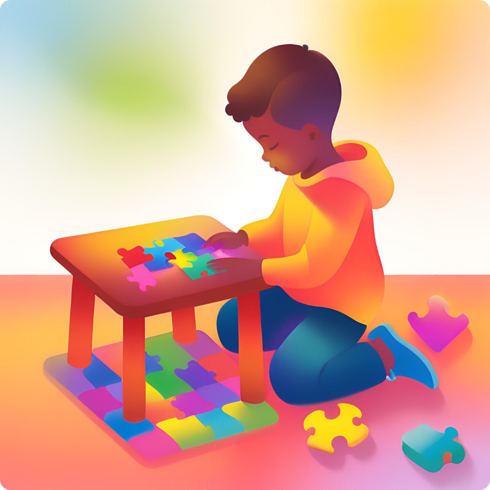

O jogo que transforma seu filho
Quando viramos pais, uma das coisas que acabam sendo prioridade, além da educação do nosso filho, é o desenvolvimento de habilidades que consideramos importantes, como concentração, foco e raciocínio.
Se eu te dissesse que um simples tabuleiro quadriculado com algumas pecinhas pode ajudar seu filho a desenvolver habilidades incríveis? Pois é, o jogo de damas é muito mais do que uma brincadeira de passatempo. Ele pode ser uma ferramenta poderosa para estimular o raciocínio, a paciência e até mesmo a matemática das crianças. Quer saber como? Vamos ver isso agora!
Raciocínio lógico e estratégico
Jogar damas não é só mover peças para frente e torcer para dar certo. A criança aprende, de forma natural, a pensar antes de agir, antecipando as jogadas do adversário e criando estratégias. Segundo estudos sobre jogos de tabuleiro e desenvolvimento cognitivo, atividades como damas e xadrez estimulam o córtex pré-frontal, que é a região do cérebro ligada à tomada de decisão e planejamento.
Concentração e paciência
Não adianta querer vencer no impulso. No damas, cada jogada conta, e é preciso estar atento para não cair em armadilhas. Isso faz com que a criança aprenda a ter paciência e a focar em uma atividade por mais tempo. Hoje em dia, com tantos estímulos digitais, qualquer oportunidade de exercitar a atenção é valiosa!
Aprimoramento da memória
Estudos indicam que jogos de estratégia ajudam a melhorar a memória de curto e longo prazo. Em damas, a criança precisa lembrar das jogadas anteriores para não repetir erros e, aos poucos, vai criando seu próprio repertório de estratégias.
Desenvolvimento da inteligência emocional
Ganhando ou perdendo, a criança aprende a lidar com frustrações e vitórias. Ela entende que nem sempre vai vencer, mas que cada partida é uma oportunidade de aprender. Isso fortalece a resiliência e a autoconfiança da criança e tornando ela muito mais madura e resiliente.
Benefícios matemáticos
Sem perceber, a criança trabalha conceitos matemáticos enquanto joga, como padrões, sequências e relações espaciais. Estudos mostram que jogos de tabuleiro ajudam no desenvolvimento da inteligência lógico-matemática, facilitando o aprendizado de disciplinas como aritmética e geometria.
Se você quer uma forma simples e divertida de estimular o desenvolvimento do seu filho, que tal resgatar aquele tabuleiro de damas esquecido no armário? Além de todos os benefícios cognitivos, esse momento pode ser uma oportunidade única de conexão entre você e seu pequeno. Quem sabe ele não se torna um mestre das damas e ainda leva essa experiência para a vida? Vale muito a pena tentar.
Caso não tenha um tabuleiro de Damas para jogar, a baixo vai ser disponibilizado um link para que você possa baixar e imprimir esse maravilhoso jogo e jogar com seu filho.
Escrito por: Jean Paulo Jampietri de Paiva Junior